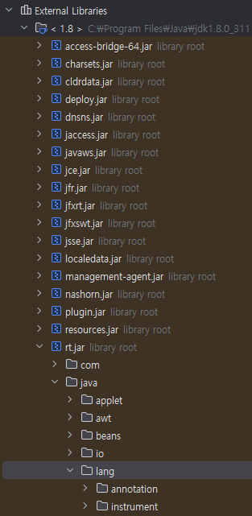
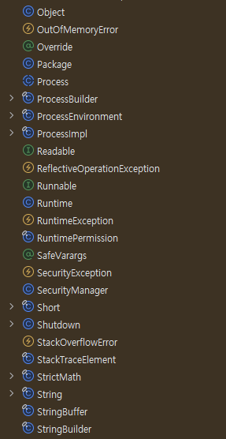
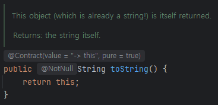
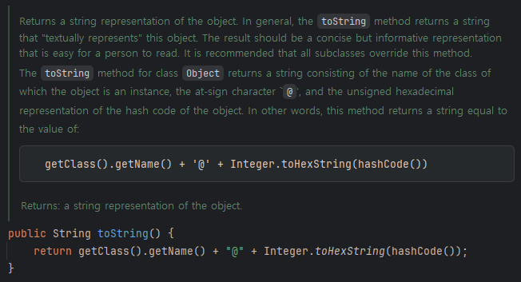

주니어 개발자를 위한
3가지 성장 습관
발표자: 심청미
2025. 09. 26
같은 출발선에서 시작했습니다
- 3년 전, 비전공자로 국비지원 교육을 수료
- "내가 잘할 수 있을까?" 불안감을 안고 있던 예비 개발자
- 오늘의 목표: 화려한 기술이 아닌, 단단한 성장을 위한 현실적인 조언
오늘 이야기할 3가지
공부의 방향
AI 시대, 무엇을 깊게 파야 하는가?
업무의 습관
나만의 가장 강력한 무기 만들기
성장의 가속
하루 10분이 만드는 압도적 차이
Part 1
공부의 방향
나만의 언어적 모국어를 만드세요
"왜 String은 대문자로 시작할까?"
작은 질문 하나가 메모리 구조의 이해로 이어집니다.
정답: 클래스(Class)이기 때문입니다.
1. 데이터 타입: 기본형 vs 참조형
- 기본형 (Primitive)
int a = 10;
변수 공간에 실제 값을 직접 저장 - 참조형 (Reference)
String s = "Hi";
실제 값이 있는 곳의 메모리 주소를 저장
2. 문자열 구현: C vs Java
- C언어
String 타입이 없고, 문자(char) 배열로 표현
- Java
문자 배열과 기능을 묶어 String 클래스로 설계
클래스는 참조형이므로, 변수는 실제 값이 아닌 메모리 주소를 가집니다.
이것이 문자열 내용을 비교할 때, ==가 아닌 .equals()를 써야 하는 이유입니다.
Object vs String
Object obj = new Object();
System.out.println(obj);
// 출력: java.lang.Object@7852e922
String str = "hello";
System.out.println(str);
// 출력: ?🅰️
hello
🅱️
java.lang.String@15db9742
"println(str)은 왜 주소값이 아닐까?"
println은 모든 객체의 .toString() 메소드를 자동 호출
1. String 객체
.toString()의 특별한 재정의(Override):
문자열 내용 자체를 반환
실제 `String.java` 소스 코드:
public String toString() {
return this;
}
2. 일반 Object
.toString() 재정의가 없다면 기본 동작:
클래스이름@해시코드 반환
실제 `Object.java` 소스 코드:
public String toString() {
return getClass().getName() + "@" +
Integer.toHexString(hashCode());
}
직접 JDK 소스 코드를 열어보면...
1. JDK 라이브러리 경로
2. `java.lang` 패키지 내부
3. `String.toString()`
4. `Object.toString()`
== VS .equals
String s1 = "hello";
String s2 = "hello";
if (s1 == s2) {
System.out.println("line 1 ==");
}
if (s1.equals(s2)) {
System.out.println("line 2 ==");
}
// 출력: ?🅰️
line 2 ==
🅱️
line 1 ==
line 2 ==
"s1 == s2는 왜 true일까?"
String Constant Pool과 불변성 때문
1. 리터럴 방식 (`"..."`) ♻️
String Constant Pool에 같은 내용이 있으면
기존 주소를 공유
String s1 = "hello";
String s2 = "hello";
// s1 == s2 결과: true
2. `new` 키워드 방식
new는 Pool과 상관없이 무조건 새로운 객체를 만듬
String s3 = new String("hello");
String s4 = new String("hello");
// s3 == s4 결과: false
생성 방식에 따라 == 비교는 맞을 수도, 틀릴 수도 있습니다.
따라서 문자열의 내용을 비교할 때는 항상 .equals() 를 사용하는 것이 안전한 규칙입니다.
실무에서 == 비교가 실패하는 진짜 이유
`new String()`을 안 써도, 외부 문자열은 새로 생성됩니다.
컴파일 시점
코드에 직접 작성한 문자열 리터럴.
String Constant Pool에 저장
String statusInCode = "SUCCESS";
런타임 시점
외부에서 들어오는 모든 데이터.
Heap 메모리에 새로 생성
- DB 조회 결과 (MyBatis, JPA)
- 외부 API 응답, 사용자 입력 등
// DB에서 "SUCCESS" 값을 조회했다고 가정
String statusFromDB = mybatis.getStatus();
💀 false statusInCode == statusFromDB
👍 true statusInCode.equals(statusFromDB)
문자열의 출처(메모리 위치)가 다르기 때문입니다.
지난 3년간의 기술 여정
저 수많은 기술들이 말해주는 한 가지
결국 중요한 것은 문법이 아닌 원리였습니다.
얕은 공부
여러 언어의 문법만 암기
AI가 대체하기 쉬움
깊은 공부
하나의 언어 동작 원리 이해
어떤 기술에도 응용 가능
언어적 모국어의 힘은 새로운 기술을 마주했을 때 발휘됩니다.
"이건 Java의 OOO 개념과 같네?"
라고 유추해내는 힘.
취업 전, 파고들면 좋은 개념
- ✅ 기본형(Primitive) & 참조형(Reference)
- ✅ 메모리 구조 (Stack & Heap)
- ✅ 클래스(객체)와 static 멤버
- ✅ DB 테이블 관계 (1:N, 부모-자식)
💡 Tip: 좋은 책 한 권을 처음부터 끝까지 독파하는 경험을 추천합니다!
Part 2
업무의 습관
미래의 나를 위한 해결 기록 만들기
신입의 비밀 무기: 나만의 해결 노트
사소한 성공부터 아찔한 실패의 순간까지, 모든 것을 기록합니다.


등골이 서늘해졌던 두 번의 경험
Ctrl+Z는 통하지 않습니다..
개발서버 전체 증발
내가 원했던 것: rm -rf ./
내가 입력한 것: rm -rf /
점(.) 하나 빠졌을 뿐인데,
서버의 최상위(root)부터 모든 것이 삭제 😰😵
운영 Docker 컨테이너 삭제
나의 의도: "잠시 내리는 거겠지?"
실제 명령어의 의미:
단순 중단이 아니라, 컨테이너와 네트워크를
완전히 삭제하는 명령어 😱🥶
기록은 가장 강력한 성장 도구입니다
미래의 나를 구원합니다
(삽질 시간 단축)
- ✅ "어? 이거 전에 해봤는데..."
- ✅ 반복되는 문제 해결
- ✅ 과거의 고민과 해결 과정
과거의 내가 남겨준 '치트키'
나만의 자산을 만듭니다
(백업 불가능한 경험)
회사 자산 (백업 가능)
소스코드(Git), 데이터(DB)
온전한 나의 자산 (백업 불가)
설정, 명령어, 에러 해결 과정
Part 3
성장의 가속
하루 10분이 만드는 압도적 차이
출퇴근길 10분, 1년 뒤의 압도적 차이
업무 관련 기술 영상
10분 시청
1년이면 약
38시간의 학습
단단해지는
사고의 근육
단순한 시간의 합을 넘어, 매일 고민하는 습관이 절대적인 차이를 만듭니다.
왜 10분이 절대적인 차이를 만들까?
개발자는 감(感)이 아닌 정확성으로 말해야 합니다.
사용법만 아는 단계
"이렇게 하면 되더라"
(감, 느낌에 의존)
당장은 빠르지만, 예상치 못한
문제에 대처하기 어렵습니다.
원리를 이해한 단계
"이래서 이렇게 동작한다"
(정확한 근거에 기반)
어떤 상황에서도 응용이 가능하며,
문제의 근본 원인을 찾습니다.
따로 시간을 내어 원리를 공부하기는 어렵습니다.
출퇴근길 10분은 사용법과 원리를 잇는 최고의 시너지 학습입니다.
원리를 파고드는 습관, AI로 완성도를 높이세요
출퇴근길에 쌓은 '왜?'라는 질문을 AI와 함께 더 깊게 탐구하는 것입니다.
(Bad 👎)
"이거 해결하는 코드 줘"
(Good 👍)
"이 코드는 어떤 원리로 동작해?
왜 이 함수가 최적이야?"
💡 Tip: AI에게 '원리 탐구 파트너' 역할을 부여하세요

그래서 저는 지금...
- 3년 차의 고민: "알고 있는 지식들이 파편적으로 흩어져 있는 느낌"
-
새로운 도전: 야간 대학원 진학 → 컴퓨터 공학 기초부터 다시 공부
컴퓨터가 0과 1로 세상을 이해하는 방식부터 다시 배우는 중입니다.
- ↳Flip-Flop, Accumulator (Hardware)
- ↳Assembly Language (Low-level Language)
- ↳Network 5 Layers (Communication Architecture)
- 깨달음: 변하는 기술이 아닌, 변하지 않는 본질에 투자하는 것의 중요성
오늘의 핵심: 3가지 성장 습관
1. 깊이 파기
나만의 언어적 모국어 만들기
2. 기록하기
미래의 나를 위한 해결 노트 쓰기
3. 꾸준히 하기
하루 10분의 자투리 시간 투자
Q & A
궁금한 점이 있다면 편하게 질문해주세요.
감사합니다
여러분의 성공적인 첫걸음을 응원합니다.